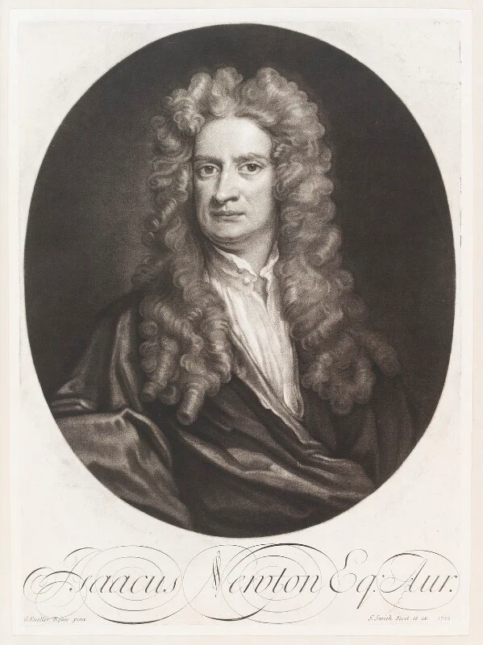

Physics · Lesson 04
Newton's Laws of Motion
In 1687, Isaac Newton published three simple rules that explain how everything moves — from a rolling marble to a rocket heading to the Moon. Over 300 years later, engineers still use these same three laws every day.
Who Was Isaac Newton?

Isaac Newton (1643–1727) was an English mathematician and physicist who changed science forever. According to legend, watching an apple fall from a tree made him wonder: why do things fall down? That question led him to develop the laws of gravity and motion. He published his three laws of motion in his masterwork Principia Mathematica in 1687. Newton also invented calculus, designed the first reflecting telescope, and explained why white light contains every color of the rainbow. Scientists consider him one of the most influential people who ever lived.
The Three Laws at a Glance
Newton described three rules that govern how objects move and how forces change that motion. Together, they explain almost every motion you can observe with the naked eye.
First Law — The Law of Inertia
Newton's First Law
"An object at rest stays at rest, and an object in motion stays in motion at the same speed and in the same direction, unless acted upon by an unbalanced external force."
In plain English: things don't change what they're doing on their own. You need to push or pull something to make it start, stop, speed up, slow down, or turn.
What is Inertia?
Inertia is the tendency of an object to resist any change in its state of motion. The more mass an object has, the more inertia it has — meaning the harder it is to start moving, stop, or change direction.
Think about pushing an empty shopping cart versus a full one. The full cart has more mass, so it has more inertia — it is much harder to get moving, and much harder to stop once it is rolling.
Real-World Examples of the First Law
Second Law — Force, Mass, and Acceleration
Newton's Second Law
"The acceleration of an object depends directly on the net force acting on it, and inversely on its mass."
The bigger the force you apply, the faster the object accelerates. The heavier the object, the less it accelerates for the same force. This relationship is captured in the most famous equation in mechanics:
Understanding the Equation
The equation F = ma can be rearranged to find any of the three values:
| To find… | Use this formula | Example |
|---|---|---|
| Force (F) | F = m × a | 2 kg × 3 m/s² = 6 N |
| Acceleration (a) | a = F ÷ m | 10 N ÷ 5 kg = 2 m/s² |
| Mass (m) | m = F ÷ a | 12 N ÷ 4 m/s² = 3 kg |
Real-World Examples of the Second Law
Legend of the Apple Lab
Use one famous apple to walk through all three laws: first it rests, then a shake starts the motion, and finally the impact reveals an action-reaction pair.
Newton's Apple Garden
A story-driven "What If?" lab for inertia, F = ma, and action-reaction.
Third Law — Action and Reaction
Newton's Third Law
"For every action, there is an equal and opposite reaction."
Whenever one object pushes or pulls on another, the second object pushes or pulls back with the same amount of force — but in the opposite direction. Forces always come in pairs.
The Key Insight: Forces Always Come in Pairs
You can never have just one force. Every force is part of an action-reaction pair acting on two different objects. The forces are equal in size but opposite in direction.
The Apple "Bonk" — Law 3 in Action
When the apple reaches Newton's head, the contact force works both ways. The apple pushes down on Newton's head, and Newton's head pushes up on the apple with an equal force in the opposite direction. They do not cancel because each force acts on a different object.
Real-World Examples of the Third Law
Newton's Laws in the Real World
These three laws are not just classroom theory — engineers use them constantly to design everything from cars to spacecraft.
Practice Problems
Use F = ma and its rearrangements. Round to one decimal place where needed.
Easy1. A force of 30 N acts on a 6 kg box. What is the acceleration? (a = F ÷ m)
Easy2. A 4 kg object accelerates at 3 m/s². What force caused this? (F = m × a)
Medium3. A 10 N force produces an acceleration of 2.5 m/s². What is the mass of the object? (m = F ÷ a)
Medium4. A car of mass 1,200 kg accelerates at 3 m/s². What net force does the engine produce?
Challenge5. A rocket weighs 500,000 kg at launch. Its engines produce 7,500,000 N of thrust. What is its initial acceleration? (Ignore gravity for this calculation.)
Challenge6. A swimmer pushes against the pool wall with a force of 180 N. By Newton's Third Law, with what force does the wall push the swimmer back?